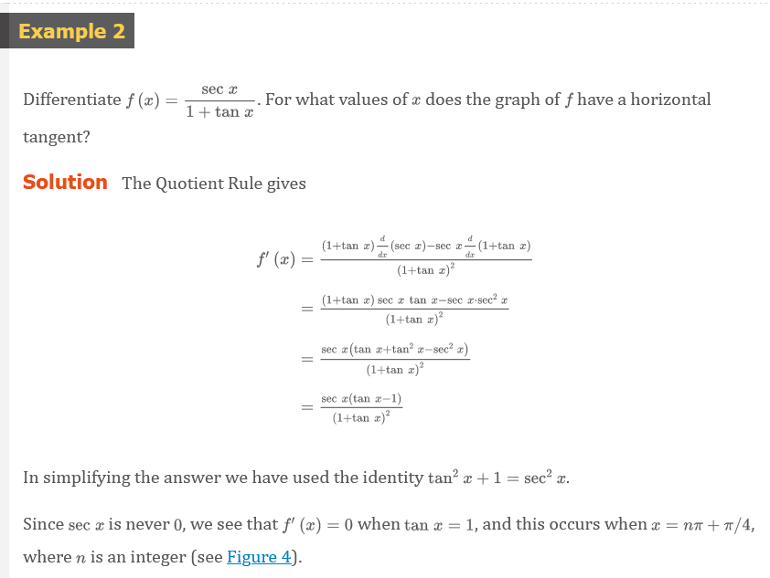
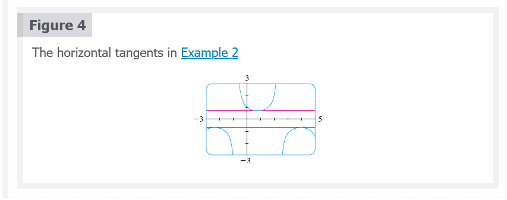
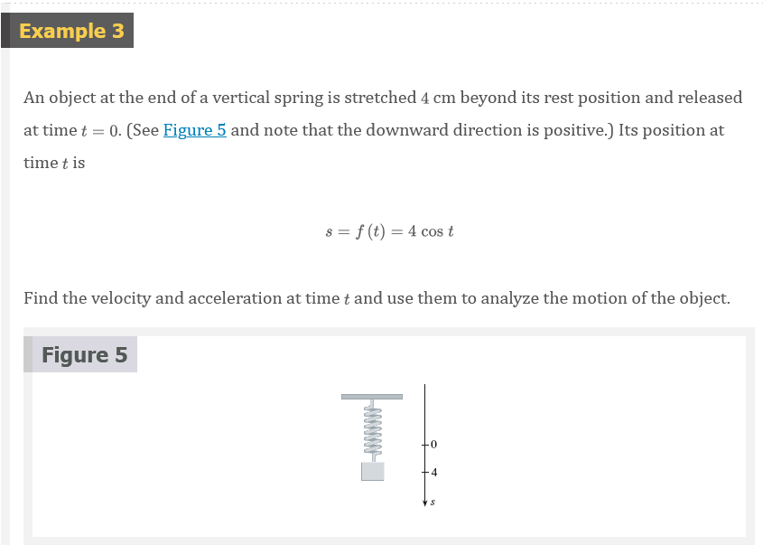
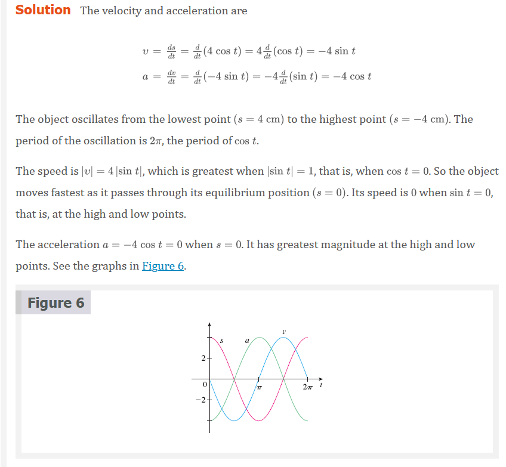
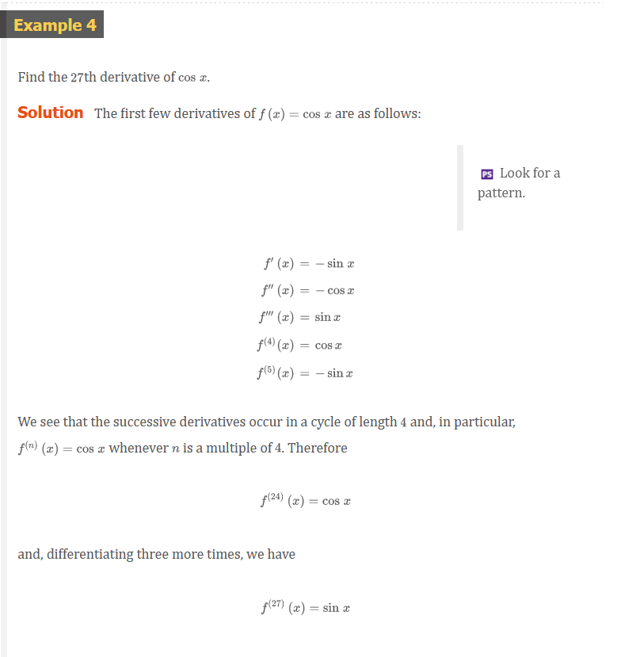
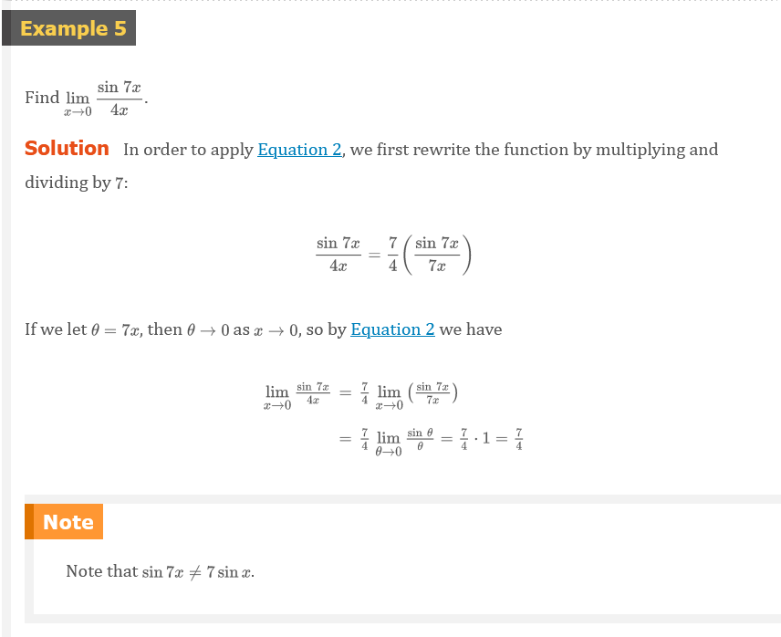
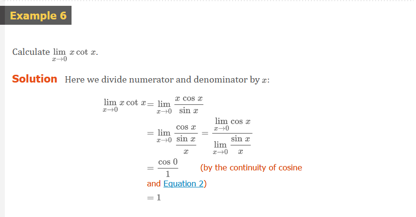

Chapter 3.3: Derivatives of Trigonometric Functions
Let’s try to confirm our guess that if f(x) = \sin{x}, then f^{\prime}(x) = \cos{x}. From the definition of a derivative, we have
Equation 1
\begin{aligned} f^{\prime}(x) & = \lim_{h \to 0}\frac{f(x + h) - f(x)}{h} = \lim_{h \to 0}\frac{\sin{(x + h)} - \sin{x}}{h} \\ & = \lim_{h \to 0}\frac{\sin{x}\cos{h} + \cos{x}\sin{h} - \sin{x}}{h} \\ & = \lim_{h \to 0}\left [ \frac{\sin{x}\cos{h} - \sin{x}}{h} + \frac{\cos{x}\sin{h}}{h} \right ] \\ & = \lim_{h \to 0}\left [ \sin{x}\left ( \frac{\cos{h} - 1}{h} \right ) + \cos{x}\left ( \frac{\sin{h}}{h}\right ) \right ] \\ & = \lim_{h \to 0}\sin{x} \cdot \lim_{h \to 0}\frac{\cos{h} - 1}{h} + \lim_{h \to 0}\cos{x} \cdot \lim_{h \to 0}\frac{\sin{h}}{h} \end{aligned}
Equation 2
\lim_{\theta \to 0}\frac{\sin{\theta}}{\theta} = 1
We noe use a geometric argument to prove Equation 2. Assume first that \theta lies between 0 and \pi/2. Figure 2(a) shows a sector of a circle with center O, central angle \theta, and radius 1. BC is drawn perpendicular to OA. By the definition of radian measure, we have arc AB = \theta. Also |BC| = |OB|\sin{\theta} = \sin{\theta}. From the diagram we see that
|BC| < |AB| < \text{ arc } AB
Therefore
\sin{\theta} < \theta
so
\frac{\sin{\theta}}{\theta} < 1
Let the tangent lines at A and B intersect at E. You can see from Figure 2(b) that the circumference of a circle is smaller than the length of a circumscribed polygon, and so arc AB < |AE| + |EB|. Thus
\begin{aligned} \theta = \text{ arc } AB &< |AE| + |EB| \\ &< |AE| + |ED| \\ &= |AD| = |OA|\tan{\theta} \\ &= \tan{\theta} \end{aligned}
(In Appendix F the inequality \theta \le \tan{\theta} is proved directly from the definition of the length of an arc without resorting to geometric intuition as we did here.) Therefore we have
\theta < \frac{\sin{\theta}}{\cos{\theta}}
so
\cos{\theta} < \frac{\sin{\theta}}{\theta} < 1
We know that \lim_{\theta \to 0}1 = 1 and \lim_{\theta \to 0}\cos{\theta} = 1, so by the Squeeze Theorem, we have
\lim_{\theta \to 0^{+}}\frac{\sin{\theta}}{\theta} = 1
But the function (\sin{\theta})/\theta is an even function, so its right and left limits must be equal. Hence, we have
\lim_{\theta \to 0}\frac{\sin{\theta}}{\theta} = 1
so we have proved Equation 2.
We can deduce the value of the remaining limit in (1) as follows:
\begin{aligned} \lim_{\theta \to 0}\frac{\cos{\theta} - 1}{\theta} &= \lim_{\theta \to 0}\left ( \frac{\cos{\theta} - 1}{\theta} \cdot \frac{\cos{\theta} + 1}{\cos{\theta} + 1} = \lim_{\theta \to 0}\frac{\cos^{2}{\theta} - 1}{\theta(\cos{\theta} + 1)} \right ) \\ &= \lim_{\theta \to 0}\frac{-\sin^{2}{\theta}}{\theta(\cos{\theta} + 1)} = -\lim_{\theta \to 0}\left ( \frac{\sin{\theta}}{\theta} \cdot \frac{\sin{\theta}}{\cos{\theta} + 1} \right ) \\ &= -\lim_{\theta \to 0}\frac{\sin{\theta}}{\theta} \cdot \lim_{\theta \to 0}\frac{\sin{\theta}}{\cos{\theta} + 1} \\ &= -1 \cdot \left ( \frac{0}{1 + 1} \right ) = 0 \;\;\; \text{(by Equation 2)} \end{aligned}
Equation 3
\lim_{\theta \to 0}\frac{\cos{\theta} - 1}{\theta} = 0
NOTE
If we now put the limit in equation (2) and (3) in (1), we get
\begin{aligned} f^{\prime} & = \lim_{h \to 0}\sin{x} \cdot \lim_{h \to 0}\frac{\cos{h} - 1}{h} + \lim_{h \to 0}\cos{x} \cdot \lim_{h \to 0}\frac{\sin{h}}{h} \\ & = (\sin{x}) \cdot 0 + (\cos{x}) \cdot 1 = \cos{x} \end{aligned}
So we have proved the formula for the derivative of the sine function:
Equation 4
\frac{d}{dx}(\sin{x}) = \cos{x}
Equation 5
\frac{d}{dx}(\cos{x}) = -\sin{x}
The tangent function can also be differentiated by using the definition of a derivative, but it is easier to use the Quotient Rule together with Formula 4 and Equation 4 and Equation 5:
\begin{aligned} \frac{d}{dx}(\tan{x}) &= \frac{d}{dx}(\frac{\sin{x}}{\cos{x}}) \\ &= \frac{\cos{x}\frac{d}{dx}(\sin{x})-\sin{x}\frac{d}{dx}(\cos{x})}{\cos^{2}{x}} \\ &= \frac{\cos{x} \cdot \cos{x}-\sin{x}(-\sin{x})}{\cos^{2}{x}} \\ &= \frac{\cos^{2}{x} + \sin^{2}{x}}{\cos^{2}{x}} \\ &= \frac{1}{\cos^{2}{x}} = \sec^{2}{x} \end{aligned}
Equation 6
\frac{d}{dx}(\tan{x}) = \sec^{2}{x}
Derivatives of Trigonometric Functions
\begin{aligned} \frac{d}{dx}(\sin{x}) &= \cos{x} \;\;\;\;\;\;\;\;\;\;\; \frac{d}{dx}(\csc{x}) = -\csc{x}\cot{x} \\ \frac{d}{dx}(\cos{x}) &= -\sin{x} \;\;\;\;\;\;\;\; \frac{d}{dx}(\sec{x}) = \sec{x}\tan{x} \\ \frac{d}{dx}(\tan{x}) &= \sec^{2}{x} \;\;\;\;\;\;\;\;\; \frac{d}{dx}(\cot{x}) = -\csc^{2}{x} \end{aligned}
      
Video Lectures
Resources
Textbook